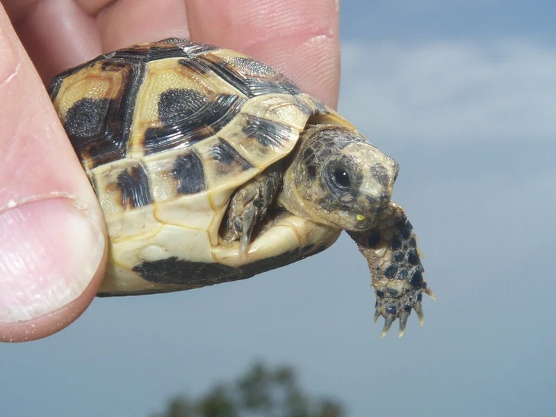

ギリシャリクガメの亜種のなかで最も小さくとどまる、チュニジア産の亜種。黄色みの強い甲に黒の斑が散る。冬眠しない系統として知られる。CITES II。

1年後の甲長は8〜11cm程度。バスキングライトの下で体を温め、野草を食べる時間が日課になる。小型にとどまる亜種のため、成長の速度もゆるやかで、設備の追加が急に必要になりにくい。
10年後は甲長13〜17cm程度。ギリシャリクガメの亜種では最小級のため、ケージの買い替えが起きにくいのが利点になる。ただし50〜80年の寿命を持ち、飼い主の人生設計のほうが先に問われる。
北アフリカ産のギリシャリクガメは冬眠しない系統として扱うのが安全とされる。ヨーロッパ産の亜種と同じ感覚で冬に温度を落とすと体調を崩しやすい。迎える前に亜種名と産地を確認し、冬も加温を切らさない前提で設備を組んでおきたい。
チュニジア北東部から東部アルジェリアにかけての、乾燥した低地・オリーブ畑・海岸性の低木林に分布する。ギリシャリクガメの亜種のなかでは分布域が狭く、成体でも小型にとどまる。地中海の島嶼部には人為的に持ち込まれた個体群も知られている。
ギリシャリクガメは亜種が多く、亜種によって最終サイズも冬の扱いも変わります。この亜種は小型にとどまる代わりに、寒さへの耐性が低いと考えられています。購入時は亜種名と産地が明記された個体を選び、亜種が不明な個体をチュニジア産として扱わないでください。
← 横にスクロールできます
| 種名 | 甲長 | 難易度 | 必要環境 | 特徴 |
|---|---|---|---|---|
| チュニジアギリシャリクガメ このページ | 13〜17cm | 中〜上級 | 60〜90cm（成体） | 本種 |
| ギリシャリクガメ（種全体） | 15〜25cm | 中〜上級 | 60〜90cm | 本種の親種 |
| イベラギリシャリクガメ | 20〜30cm | 中〜上級 | 90〜120cm | 最大の亜種 |
| ゴールデンギリシャリクガメ | 13〜18cm | 中〜上級 | 60〜90cm | 小型・冬眠させない |
チュニジアギリシャリクガメはギリシャリクガメの亜種のなかでも小型で、甲長は13〜17cm程度にとどまります。60〜90cm級のケージで床面積を優先して組めば、成体まで同じ設備で通せる見込みが立ちます。乾燥系のため日本最大のリスクは梅雨〜夏の蒸れで、通気を最優先します。UVBはFerguson Zone 3の強UVB帯で、T5 HO直管10〜12%クラスが基本です（製品ごとの照度表確認まで特定製品は断定しません）。冬は加温を切らさないでください。
この亜種を独立した亜種として扱うか、ギリシャリクガメの地域的な変異に含めるかは資料によって扱いが分かれます。また流通個体には亜種間の交雑が含まれることが知られており、産地の分からない個体の亜種同定は困難です。分からない場合は亜種名を断定しない、という方針をこのサイトでは取っています。
飼育温度・湿度などの数値は飼育資料と国内飼育の一般的な目安にもとづきます。確定的な一次資料が乏しい項目は断定していません。